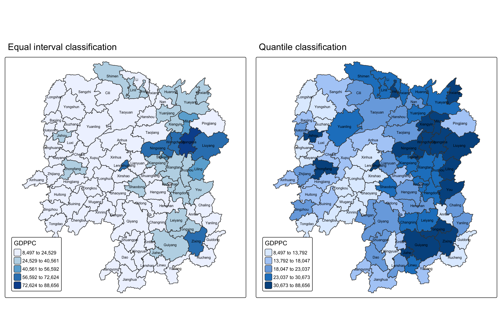

pacman::p_load(sf, tidyverse, sfdep, tmap)05b - Local Measures of Spatial Autocorrelation
1 Overview
Local Measures of Spatial Autocorrelation (LMSA) focus on the relationships between each observation and its surroundings, rather than providing a single summary of these relationships across the map. In this sense, they are not summary statistics but scores that allow us to learn more about the spatial structure in our data.
The general intuition behind the metrics however is similar to that of global ones. Some of them are even mathematically connected, where the global version can be decomposed into a collection of local ones. One such example are Local Indicators of Spatial Association (LISA). Beside LISA, Getis-Ord’s Gi-statistics will be introduce as an alternative LMSA statistics that present complementary information or allow us to obtain similar insights for geographically referenced data.
Objectives
In this hands-on exercise, we will compute Local Measures of Spatial Autocorrelation (LMSA) by using sfdep package. We wil do the following:
- import geospatial data using appropriate function(s) of sf package,
- import csv file using appropriate function of readr package,
- perform relational join using appropriate join function of dplyr package,
- compute Local Indicator of Spatial Association (LISA) statistics for detecting clusters and outliers by using appropriate functions sfdep package;
- compute Getis-Ord’s Gi-statistics for detecting hot spot or/and cold spot area by using appropriate functions of sfdep package; and to visualise the analysis output by using tmap package.
2 Getting started
2.1 The analytical question
In spatial policy, one of the main development objective of the local govenment and planners is to ensure equal distribution of development in the province. Our task in this study, hence, is to apply appropriate spatial statistical methods to discover if development are evenly distributed geographically. If the answer is No. Then, our next question will be “is there sign of spatial clustering?”. And, if the answer for this question is yes, then our next question will be “where are these clusters?”
In this case study, we are interested to examine the spatial pattern of a selected development indicator (i.e. GDP per capita) of Hunan Provice, People Republic of China.(https://en.wikipedia.org/wiki/Hunan)
2.2 Setting the Analytical Tools
We will use sf, sfdep, tmap and tidyverse packages of R.
| R package | Description |
|---|---|
| sf | importing and handling geospatial data in R |
| tidyverse | wrangling attribute data in R |
| sfdep | compute spatial weights, global and local spatial autocorrelation statistics |
| tmap | prepare cartographic quality choropleth map |
The code chunk below is used to perform the following tasks:
- creating a package list containing the necessary R packages,
- checking if the R packages in the package list have been installed in R, if they have yet to be installed, RStudio will installed the missing packages,
- launching the packages into R environment.
3 The data
3.1 The Study Area and Data
Two data sets will be used in this hands-on exercise, they are:
Hunan province administrative boundary layer at county level. This is a geospatial data set in ESRI shapefile format.
Hunan_2012.csv: This csv file contains selected Hunan’s local development indicators in 2012.
3.2 Import shapefile into R environment
The code chunk below uses st_read() of sf package to import Hunan shapefile into R. The imported shapefile will be simple features Object of sf.
hunan <- st_read(dsn = "data/geospatial", layer = "Hunan") %>%
st_transform(crs = 32650)Reading layer `Hunan' from data source
`/Users/cathyc/Documents/cathyschu/ISSS626GEO/Hands-on_Ex/Hands-on_Ex05/data/geospatial'
using driver `ESRI Shapefile'
Simple feature collection with 88 features and 7 fields
Geometry type: POLYGON
Dimension: XY
Bounding box: xmin: 108.7831 ymin: 24.6342 xmax: 114.2544 ymax: 30.12812
Geodetic CRS: WGS 84Tips
The raw data is in WGS 84 geographic coordinates system. For geospatial analysis, it is appropriate to use projected coordinates system. In the code chunk above, st_transform() is used to transform Hunan geospatial data from WGS 84 to UTM zone 50N (i.e. EPSG: 32650).
3.3 Import csv file into R environment
Next, we will import Hunan_2012.csv into R by using read_csv() of readr package. The output is R data frame class.
hunan2012 <- read_csv("data/aspatial/Hunan_2012.csv")3.4 Performing relational join
Below we will update the attribute table of hunan’s SpatialPolygonsDataFrame with the attribute fields of hunan2012 dataframe. This is performed using left_join() of dplyr package.
hunan <- left_join(hunan, hunan2012) %>%
dplyr::select(1:4, 7, 15)3.5 Visualising Regional Development Indicator
Now, we are going to prepare a basemap and a choropleth map showing the distribution of GDPPC 2012 using qtm() of tmap package.
equal <- tm_shape(hunan) +
tm_polygons(fill = "GDPPC",
fill.scale = tm_scale_intervals(
style = "equal",
n = 5,
values = "brewer.blues")) +
tm_text("NAME_3", size = 0.5) +
tm_borders(fiil_alpha = 0.5) +
tm_layout(legend.position = c("left", "bottom"),
main.title = "Equal interval classification")
quantile <- tm_shape(hunan) +
tm_polygons(fill = "GDPPC",
fill.scale = tm_scale_intervals(
style = "quantile",
n = 5)) +
tm_text("NAME_3", size = 0.5) +
tm_borders(fiil_alpha = 0.5) +
tm_layout(legend.position = c("left", "bottom"),
main.title = "Quantile classification")
tmap_arrange(equal,
quantile,
asp=1,
ncol=2)
Insights
Does the plot above reveal any outliers or clusters?
outliers - from both maps, we can see that county Lengshuijiang appears to be dark blue and is surrounded by lighter colors counties. Zixing, could also be considered as an outlier as most of the surrounding counties are lighter colors. Another outlier is Anren that appears to be the bottom of GDPPC but surrounded by higher GDPPC counties.
clusters - We see clusters appearing in the Hunan province. In the northeast and southeast there is a high GDPPC cluster each. In central south from Xinhua to Tongdao counties, these form a low GDPPC cluster.
Does the plot above indicate the presence of hot spots or cold spots? Based on our observation for clusters:
- Hot spots include the clusters surrounding Changsha and Guiyang.
- Cold spot is the cluster from Xinhua to Tongdao that we identified for low GDPPC cluster.